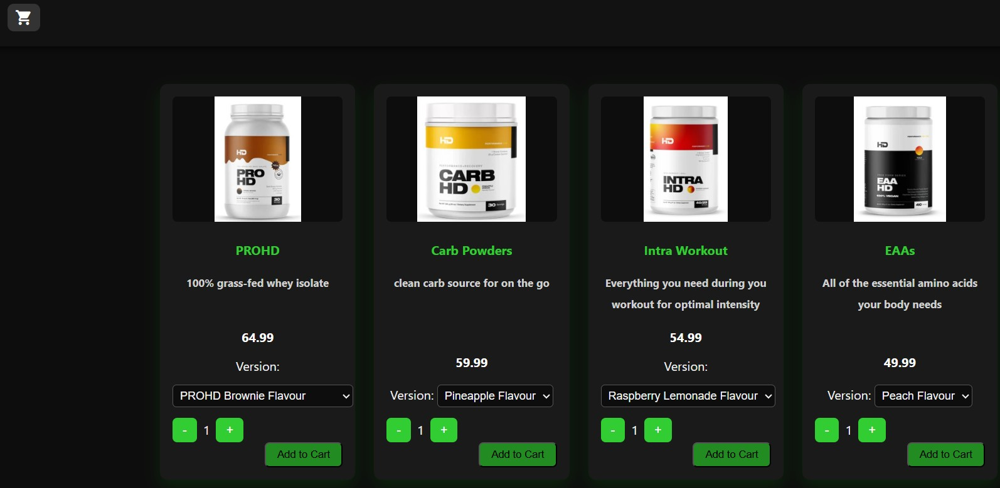

How to Use the Products Page
Within the Products page, a user can browse through all of our available products. Items have multiple versions(flavour, quantity, etc). Thankfully, each product has its own drop-down menu to navigate to its different versions. Once satisfied with a product and version, a user may add it to their cart via the "Add To Cart" button. There are also two other buttons on each product card; one to increase quantity of selected item and one to decrease it. In this way, you can add multiple items of the same version to the cart at once. In the top left corner, there is a cart button which will allow the user to view their current cart.
